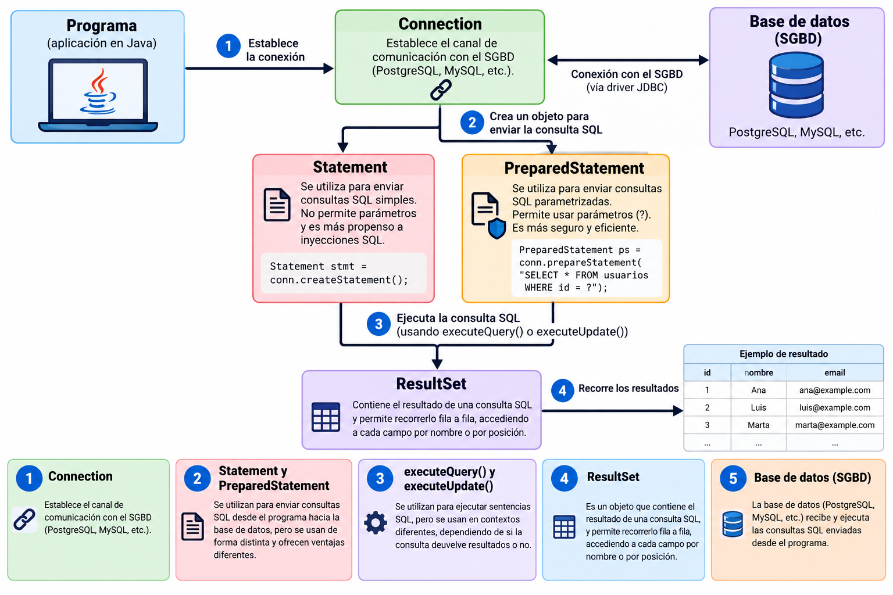

Peticiones a la BD¶
En JDBC (Java Database Connectivity), las operaciones sobre la base de datos se realizan utilizando los siguientes objetos y métodos:

-
Connection, como ya se explicó en el apartado anterior, establece el canal de comunicación con el SGBD (PostgreSQL, MySQL, etc.)
-
Los objetos PreparedStatement y Statement se utilizan para enviar consultas SQL desde el programa hacia la base de datos, pero se usan de forma distinta y ofrecen ventajas diferentes, que se explican más adelante, en este apartado.
-
ResultSet es un objeto que contiene el resultado de una consulta SQL, y permite recorrer fila a fila el conjunto de resultados, accediendo a cada campo por nombre o por posición.
-
Los métodos executeQuery() y executeUpdate() se utilizan para ejecutar sentencias SQL, pero se usan en contextos diferentes, dependiendo de si la consulta devuelve resultados o no.
ExecuteQuery/ExecuteUpdate¶
Cuando una aplicación se conecta a una base de datos, necesita ejecutar sentencias SQL desde el código. En JDBC (Java/Kotlin), existen dos métodos principales para ello: executeQuery() y executeUpdate(). Ambos se invocan desde un objeto Statement o PreparedStatement.
| Método | Uso principal | Tipo de sentencia SQL | Resultado que devuelve |
|---|---|---|---|
| executeQuery() | Realizar consultas | SELECT | Objeto ResultSet con los datos consultados |
| executeUpdate() | Realizar modificaciones | INSERT, UPDATE, DELETE, DDL (CREATE, DROP, etc.) | Un entero con el número de filas afectadas |
| execute() | Cuando no se sabe de antemano el tipo de sentencia | SELECT, INSERT, UPDATE, DELETE, DDL | Un booleano: true si devuelve un ResultSet, false si devuelve un entero |
PreparedStatement/Statement¶
Aunque ambos objetos permiten enviar sentencias SQL a la base de datos, la elección entre uno u otro depende del tipo de consulta y de si intervienen datos externos (por ejemplo, introducidos por el usuario). La siguiente tabla resume qué componente conviene usar en cada situación:
| Si necesitas... | Usa... |
|---|---|
| Consultas sencillas sin parámetros | Statement |
| Consultas con datos del usuario | PreparedStatement |
| Seguridad frente a inyecciones SQL | PreparedStatement |
| Ejecutar muchas veces con distintos valores | PreparedStatement |
| Crear tablas o sentencias SQL fijas | Statement |
Diferencia en la compilación entre Statement y PreparedStatement¶
Statement y PreparedStatement son interfaces de JDBC cuyos objetos permiten preparar y ejecutar sentencias SQL.
Cada vez que envías una sentencia SQL al motor de base de datos, el motor debe hacer varios pasos:
- Parsear la consulta → comprobar que la sintaxis SQL es correcta.
- Compilar → convertir la consulta en un plan de ejecución interno (cómo buscar los datos, qué índices usar, etc.).
- Ejecutar → obtener los resultados.
🔹 Con Statement
Cada vez que llamas a executeQuery() o executeUpdate(), el SQL completo se envía como texto:
var stmt = conn.createStatement() // (1)!
stmt.executeQuery("SELECT * FROM clientes WHERE ciudad = 'Valencia'") // (2)!
stmt.executeQuery("SELECT * FROM clientes WHERE ciudad = 'Madrid'")
stmt.close() // (4)!
- Crea un
Statementa partir de la conexión, sin ningún SQL asociado todavía. - Cada llamada envía el SQL completo como texto: el motor lo parsea y compila de nuevo en cada ejecución.
executeUpdate()se usa con sentencias que modifican datos (UPDATE,DELETE...) y devuelve el número de filas afectadas.- Cierra el
Statementy libera los recursos asociados.
En este caso, el motor parsea y compila de nuevo las dos consultas, aunque solo cambia el valor de 'Valencia' a 'Madrid'.
🔁 Es decir, se repite todo el trabajo de compilación cada vez, lo que reduce el rendimiento si haces muchas consultas parecidas.
🔹 Con PrepareStatement
Aquí, el SQL se envía una sola vez con parámetros (?):
var pstmt = conn.prepareStatement("SELECT * FROM clientes WHERE ciudad = ?") // (1)!
pstmt.setString(1, "Valencia") // (2)!
pstmt.executeQuery()
pstmt.setString(1, "Madrid")
pstmt.executeQuery()
pstmt.close()
- El SQL se compila una sola vez, con
?como marcador de posición para cada parámetro. setString()asigna el valor según la posición del parámetro (empezando en 1); el mismoPreparedStatementse reutiliza cambiando solo el valor.- Cuando hay varios parámetros, cada
?se corresponde con su posición: el primero para la ciudad y el segundo para el id.
El motor solo compila la consulta una vez, y después reutiliza el mismo plan de ejecución cambiando solo el valor del parámetro.
⚡ Esto ahorra tiempo y recursos, sobre todo cuando repites muchas veces la misma consulta con diferentes datos (por ejemplo, en bucles o inserciones masivas).
🤔 Comprueba tu comprensión
¿Por qué es especialmente importante usar PreparedStatement cuando trabajamos con datos introducidos por el usuario (por ejemplo, desde un formulario)?
Ver respuesta
Principalmente por seguridad, para evitar ataques de Inyección SQL. Al usar PreparedStatement, los datos introducidos por el usuario se tratan estrictamente como valores literales y nunca como código ejecutable. Además, mejora el rendimiento al compilar la consulta una sola vez.
Continúa con las operaciones con SQLite.